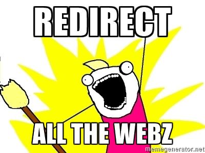

Sécurité Web

Par Alexandre Gravel-Raymond
Pourquoi ?
- Sécurité des utilisateurs
- Confidentialité des données
- Intégrité des données
- Image de l'organisation
OWASP
Open Web Application Security Project est une organisation à but non lucratif fournissant des recommandations, outils et articles de référence sur la sécurité des applications web.
Projet Top 10
Liste les 10 risques de sécurité web les plus critiques
Dernière version publiée en 2013 et toujours d'actualité
1. Injection

Injection SQL
Cas typique :
Code :$sql = "SELECT * FROM users
WHERE login = '".$_GET['login']."'
AND password = '".$_GET['password']."'";
$user = mysqli_query($sql);
Requête :GET /login.php?login=unicorn&password='+OR+'1'='1 HTTP/1.1
Résultat :SELECT * FROM users
WHERE login = 'unicorn'
AND password = '' OR '1'='1'
Comment se protéger ?
- Ne jamais faire confiance aux données provenant d'une source tiers (paramètres GET/POST, cookies, base de données, etc).
-
Toujours échapper les chaînes de caractères à insérer dans une requête ou une commande. Exemples :
MySQLi :
$login = mysqli_real_escape_string($_GET['login']);PDO :
$login = $connection->quote($_GET['login']);
- Utiliser des requêtes préparées
- Ne pas réinventer la roue :
// DON'T DO THIS
$login = str_replace("'", "\\'", $_GET['login']);Attention !
Des injections sont possibles à chaque moment où l'application utilise des données fournies par le client pour interagir avec un système tiers
- Commandes de l'OS (exec(), system(), etc.)
- Envoi de mails (injection d'entêtes)
- Appel à un webservice
- Etc.
Le nettoyage de l'input doit être approprié au contexte
2. Violation de gestion d’authentification et de session

Exemples
- Les mots de passe sont stockés ou envoyés en clair (le hachage MD5 est insuffisant, utiliser la fonction password_hash())
- Les sessions durent trop longtemps ou éternellement (prendre en compte les utilisations sur des postes publics)
- Exposition ou vulnérabilité des IDs de session (ex: paramètre PHPSESSID dans l'URL)
3. Cross-Site Scripting (XSS)

Exemple de faille XSS
Code :
Requête :GET /index.php?q="/><script>alert('Vive+le+Québec+Libre+!');</script> HTTP/1.1
Rendu :
Types
- Serveur / Client
- Réfléchi / Stocké
Risques
- Vol de session
- Defacement
- Propagation de virus
- ...
- samy is my hero!
Comment s'en prémunir
- Ne jamais faire confiance aux données provenant d'une source tiers (paramètres GET/POST, cookies, base de données, etc).
-
Toujours échapper les chaînes de caractères à insérer dans dans une page HTML.
Utiliser les méthodes d'échappement fournies par le moteur de template utilisé.
- Ne pas réinventer la roue :
// DON'T DO THIS $q = str_replace('"', '\\"', $_GET['q']); - Toujours déclarer l'encodage de la page HTML pour éviter des contournement par modification de l'encodage (UTF-7)
- Utiliser le flag HTTPOnly sur les cookies de session (évitant qu'ils soient récupérés en JavaScript)
- Envisager l'utilisation de Content Security Policy (CSP) permettant notamment de limiter l'origine d'exécution de scripts JS.
Attention !
Il faut toujours prendre en compte le contexte dans lequel la chaîne sera affichée.
- Dans du code JavaScript / JSON :
json_encode() - Dans du code CSS
- Dans un URL :
url_encode() - Dans un commentaire HTML
4. Références directes non sécurisées à un objet
Exemple d'attaque
URL de téléchargement :http://www.example.net/download_file.php?id=665
Intuitivement, on incrémente !
Solutions
- Implémenter des références indirecte aux objets auxquels l'utilisateur a réellement accès.
Télécharger mon 6e fichier :
http://www.example.net/download_file.php?n=6 - Vérifier les droits à chaque tentative d'accès à une ressource protégée.
5. Mauvaise configuration sécurité
6. Exposition de données sensibles
« Beaucoup d'applications web ne protègent pas correctement les données sensibles telles que les cartes de crédit, identifiants d'impôt et informations d'authentification. Les pirates peuvent voler ou modifier ces données faiblement protégées pour effectuer un vol d'identité, de la fraude à la carte de crédit ou autres crimes. »

Défenses possible
- Chiffrer les données sensibles (avec un algorithme approprié) lors du stockage et du transport (SSL) des données
- Stocker le moins possible de données sensibles
7. Manque de contrôle d’accès au niveau fonctionnel
« Pratiquement toutes les applications web vérifient les droits d'accès au niveau fonctionnel avant de rendre cette fonctionnalité visible dans l'interface utilisateur. Cependant, les applications doivent effectuer les mêmes vérifications de contrôle d'accès sur le serveur lors de l'accès à chaque fonction. »

8. Cross-Site Request Forgery (CSRF)
« Une attaque CSRF (Cross Site Request Forgery) force le navigateur d'une victime authentifiée à envoyer une requête HTTP forgée, comprenant le cookie de session de la victime ainsi que toute autre information automatiquement inclue, à une application web vulnérable. »

Exemple d'attaque
URL d'envoi d'email massif :http://www.example.net/admin/massive_send.php?title=Code+Promo&body=Bonjour+PRENOM,[...]
Dans une page non-liée, hébergée par le pirate :
Effet : Un utilisateur, ayant des droits suffisants, accédant par inadvertance à cette page verra l'action malicieuse déclenchée en son nom sur le site web vulnérable.
PWND!
Défenses possibles
- Utiliser un token d'utilisation unique dans un champ caché des formulaires (Anti-CSRF token)
- Demander à l'utilisateur de confirmer son action (saisir son mot de passe, CAPTCHA, etc.)
Attention :
- Il est nécessaire, mais non suffisant, d'utiliser une méthode HTTP appropriée (POST et non GET) pour les actions sensibles
- Cette attaque est fréquemment combinée à une attaque XSS du même site ou d'un site tiers
- La vérification de l'entête HTTP Referer n'est pas suffisante
- Attention également au Click-Jacking ! (utiliser X-Frame-Options)
9. Utilisation de composants avec des vulnérabilités connues
« Les composants vulnérables, tels que bibliothèques, contextes et autres modules logiciels fonctionnent presque toujours avec des privilèges maximum. Ainsi, si exploités, ils peuvent causer des pertes de données sérieuses ou une prise de contrôle du serveur. »

10. Redirections et renvois non validés
« Les applications web redirigent fréquemment les utilisateurs vers d'autres pages et sites internet, et utilisent des données non fiables pour déterminer les pages de destination. Sans validation appropriée, les attaquants peuvent réorienter les victimes vers des sites de phishing ou de malware. »

Exemple d'attaque
Code de redirection :header('Location: '.$_GET['url']);
URL envoyé à un utilisateur innocent :http://www.example.com/redirect.php?url=http://www.example-phishing.com
Effet : L'image de marque du site (son URL) est détournée afin de gagner la confiance de l'utilisateur.
PWND!
Comment bloquer l'attaque
- Ne pas inclure l'URL de redirection dans les paramètres GET ou POST
- Préférer une valeur abstraite (
url=24) qui ne pourra pas être détournée - Si c'est nécessaire de le faire, toujours vérifier la validité de l'URL avant de l'envoyer à l'utilisateur
En bonus
- Ne jamais se baser uniquement sur la sécurité par l'obscurité
- Faire auditer son code / son application par un pair
- Garder à l'esprit que ce n'est pas toujours le code qui est en cause
- Hackez !
THE END
Par Alexandre Gravel-Raymond